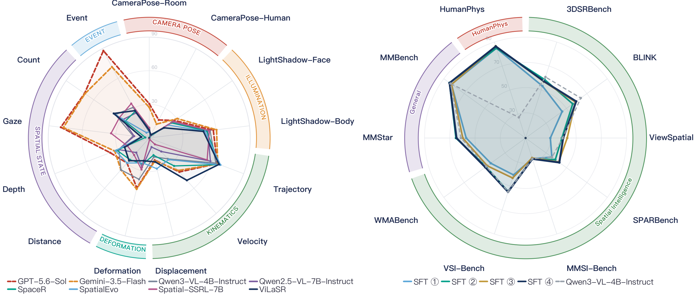
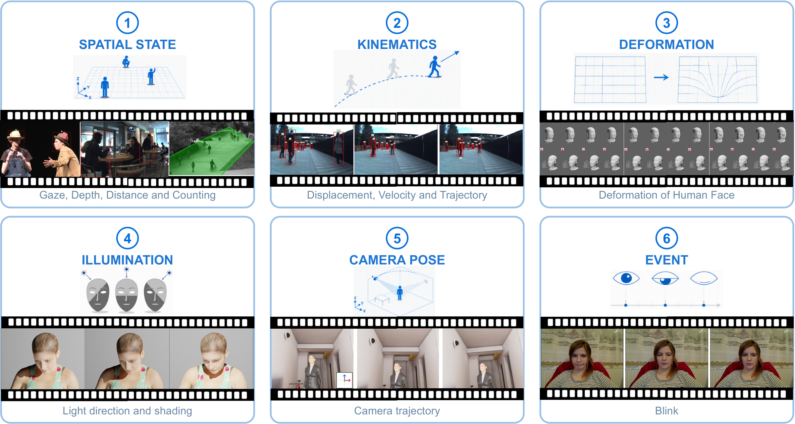
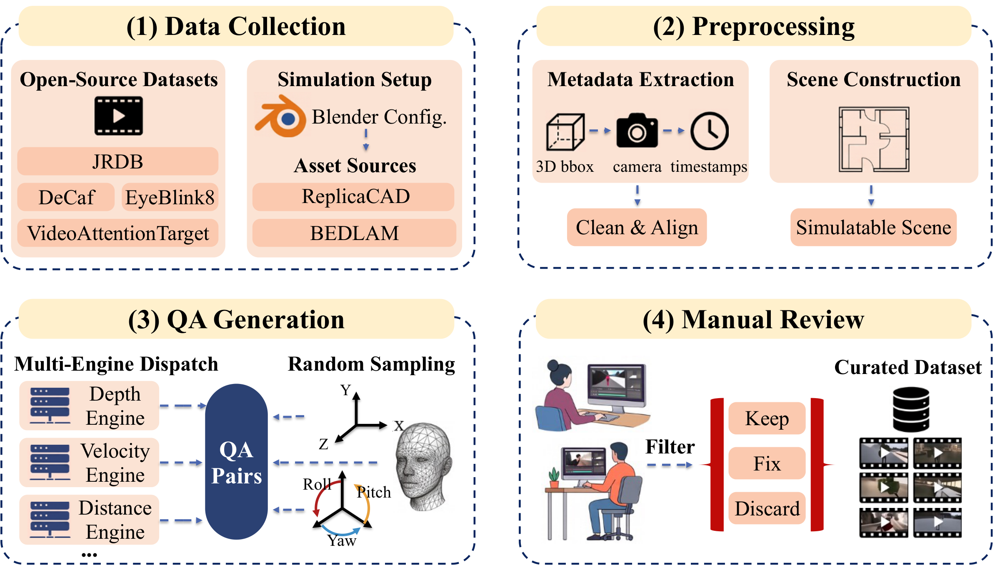
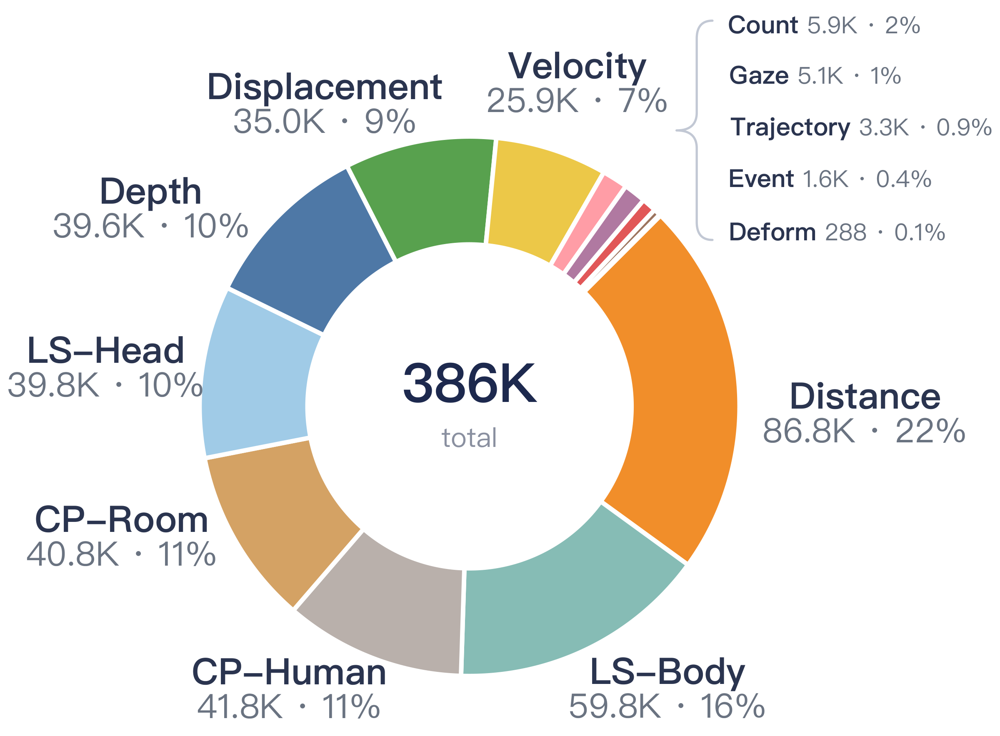
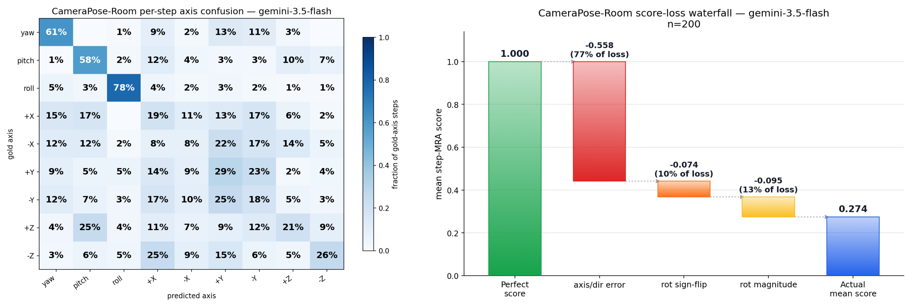
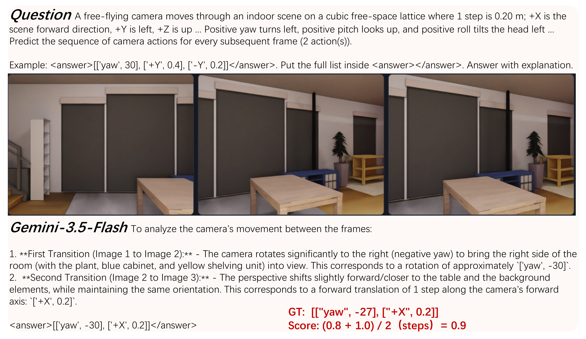

Left: radar of the eight MLLMs on HumanPhys, with one axis for each sub-task, grouped into the six taxonomy categories of the overview figure; the two proprietary models are dashed (numerical scores in the leaderboard below). Right: checkpoint ablation of fine-tuning on HumanPhys and complementary spatial data across ten benchmarks, with Qwen3-VL-4B-Instruct dashed as reference.
We introduce HumanPhys, a human-centric benchmark for real-world physical perception, and a training corpus emitted by the same pipeline. Each question targets a physically grounded quantity related to people, including depth, inter-person distance, gaze angle, displacement, velocity, heading-step trajectory, blink count, and contact-deformation strength. The rendered probes additionally test illumination inference from body and face cues and camera ego-motion, both with and without a person in the frame. All labels are derived programmatically from sensor calibration, source metadata, or renderer state, rather than written by annotators or produced by estimators on the benchmark frames. HumanPhys systematically probes six dimensions of human-centric physical perception: spatial state, kinematics, blink events, deformation, illumination, and camera pose. To the best of our knowledge, no existing MLLM benchmark-and-training corpus jointly supervises this set of human-centered physical quantities under direct metadata- or renderer-derived labels. The six dimensions appear only partially dissociable across the tested MLLMs. We benchmark a range of open- and closed-source MLLMs on HumanPhys and find that all six capability dimensions remain challenging for current models. We hope HumanPhys will support future research on multimodal systems that perceive and reason about people in the physical world.

Overview of the HumanPhys taxonomy. Six dimensions, thirteen sub-tasks. The separation is not a topic list but an operational decomposition of the role the body plays: a rigid target localized in the world frame (spatial state, kinematics); a non-rigid, living target showing transient events and contact response (blink, deformation); a photometric probe whose shading reveals a hidden light source (illumination); and a reference for the observer when ego-motion is measured with a person in frame (camera pose).
Click on column headers to sort. Scores of eight MLLMs on the 13 sub-tasks, grouped by the six taxonomy dimensions. Overall is the question-weighted composite ∑k nks̄k / 2500 over the full item bank (nk=200; 100 for Deform), scoring an unparseable answer 0 and keeping it in the denominator. The 13 sub-task columns average only parseable answers, so they are diagnostic rather than additive. Abbreviations: Dist = Distance, Disp = Displacement, Traj = Trajectory, LS = light-shadow, CP = camera-pose.
| Rank | Method | Overall | Spatial state | Kinematics | Event | Deform. | Illumination | Camera pose | |||||||
|---|---|---|---|---|---|---|---|---|---|---|---|---|---|---|---|
| Depth | Dist | Count | Gaze | Disp | Vel | Traj | Blink | Deform | LS-Head | LS-Body | CP-Room | CP-Human | |||
| GPT-5.6-Solclosed | 46.94 | 37.15 | 29.90 | 70.05 | 79.35 | 20.35 | 40.50 | 64.72 | 87.95 | 46.00 | 27.51 | 57.48 | 30.55 | 18.15 | |
| Gemini-3.5-Flashclosed | 45.61 | 32.90 | 38.05 | 69.60 | 77.05 | 21.15 | 38.85 | 65.28 | 71.60 | 47.00 | 30.39 | 60.39 | 27.36 | 13.91 | |
| Qwen3-VL-4B-Instructopen | 27.27 | 29.00 | 38.05 | 36.65 | 14.50 | 17.40 | 24.95 | 63.48 | 30.85 | 38.00 | 24.82 | 54.62 | 5.36 | 2.43 | |
| Qwen2.5-VL-7B-Instructopen | 19.74 | 29.25 | 17.40 | 28.80 | 13.50 | 8.40 | 16.15 | 58.29 | 25.20 | 27.00 | 23.94 | 52.48 | 6.44 | 2.56 | |
| SpaceRopen | 26.14 | 30.90 | 25.95 | 26.15 | 3.50 | 15.85 | 33.40 | 67.07 | 26.85 | 24.00 | 23.78 | 51.54 | 8.44 | 1.68 | |
| SpatialEvoopen | 25.21 | 32.10 | 29.85 | 35.70 | 7.45 | 28.30 | 25.90 | 67.85 | 5.30 | 23.00 | 20.27 | 50.07 | 5.60 | 2.86 | |
| Spatial-SSRL-7Bopen | 20.43 | 20.55 | 20.30 | 32.20 | 34.30 | 1.40 | 7.60 | 55.14 | 34.65 | 29.00 | 26.20 | 53.97 | 9.17 | 2.57 | |
| ViLaSRopen | 27.75 | 23.45 | 27.15 | 38.45 | 7.05 | 22.00 | 50.55 | 66.51 | 27.55 | 21.00 | 15.97 | 48.58 | 6.95 | 3.20 | |
| Baseline | Overall | Depth | Dist | Count | Gaze | Disp | Vel | Traj | Blink | Deform | LS-Head | LS-Body | CP-Room | CP-Human |
|---|---|---|---|---|---|---|---|---|---|---|---|---|---|---|
| Random | 18.60 | 7.20 | 8.30 | 23.40 | 28.20 | 5.80 | 12.20 | 37.80 | 22.00 | 26.20 | 13.40 | 48.10 | 6.10 | 2.80 |
| Text Only | 18.03 | 20.60 | 24.00 | 0.00 | 32.55 | 0.00 | 14.80 | 54.03 | 0.00 | 28.00 | 24.58 | 54.19 | 4.62 | 2.32 |
| Human indicative | 48.30 | 25.20 | 52.00 | 79.20 | 60.40 | 36.50 | 30.30 | 63.50 | 87.40 | 36.10 | 50.60 | 70.10 | 24.90 | 12.20 |
Human is indicative only: ten colleagues each answered an availability-selected, non-uniform ≈40% subset, so we draw no statistical conclusion from it. Random is a uniform random baseline over the full question bank; Text Only answers from the question text alone, without any visual input.
| Bench |
Human- CentricHuman Cent. |
Input TypeInput | Source | Task Taxon. |
Train Data Ava.Train Data |
|||
|---|---|---|---|---|---|---|---|---|
| ImageImg | VideoVid | Real | Simu |
StaticStat | Dyna |
|||
| VSI-Bench | × | × | ✓ | ✓ | × | ✓ | × | × |
| STI-Bench | × | × | ✓ | ✓ | × | ✓ | ✓ | × |
| 3DSRBench | × | ✓ | × | ✓ | ✓ | ✓ | × | × |
| BLINK | × | ✓ | × | ✓ | ✓ | ✓ | × | × |
| ViewSpatial | × | ✓ | × | ✓ | × | ✓ | × | × |
| SPARBench | × | ✓ | × | ✓ | × | ✓ | × | × |
| MMSI-Bench | × | ✓ | × | ✓ | × | ✓ | ✓ | × |
| WMABench | × | ✓ | ✓ | × | ✓ | ✓ | ✓ | × |
| SpaceR | × | × | ✓ | ✓ | × | ✓ | × | ✓ |
| SpatialScore | × | ✓ | ✓ | ✓ | ✓ | ✓ | ✓ | ✓ |
| HumanMoveVQA | ✓ | × | ✓ | ✓ | × | × | ✓ | ✓ |
| HumanPhys | ✓ | ✓ | ✓ | ✓ | ✓ | ✓ | ✓ | ✓ |
Human-Centric: humans are the targets of perception. Input Type: accepted modalities; “Video” means temporally ordered sampled frames derived from source clips. Source: provenance of the visual data. Task Taxonomy: static or dynamic queried target. Train Data Ava.: whether a training corpus is released. For HumanMoveVQA all questions are video-level multiple choice about human motion, so Static is marked ×, and Train Data Ava. denotes the authors' own training split rather than a separately released corpus.
The 13 sub-tasks fall into two groups with complementary roles. Group I covers measured human-centered physical cues in real-world video; Group II provides controlled probes for phenomena that cannot be reliably labeled in wild footage. In short, Group I tests whether a model can recover physical cues from real people, while Group II isolates cues whose ground truth is otherwise difficult to obtain.
Distance of people to the reference sensor, read directly from calibration metadata.
“How far is the person from the camera?”
Pairwise inter-person distance measured at the foot point (cx, cy, cz−h/2), which reduces the effect of variation in human height.
“What is the minimum distance between pedestrian 29 and pedestrian 46 in the video?”
Number of humans satisfying an explicitly stated spatial criterion (everybody dancing in frame, or inside a labelled walkway ROI).
“How many people are inside the walkway?”
Clockwise image-plane angle atan2(Δy, Δx) + 90° from the upward image direction to the head-centre–to–fixation-point vector. Because this angle lives in the image plane it is camera-dependent by construction, so we treat it as a viewpoint-conditioned physical cue.
“What is the gaze angle of the person relative to the upward image direction?”
Cumulative ground-plane path length ∑i√(Δxi2+Δyi2) between the first and last frame of the clip.
“How far did the person move during the clip?”
Displacement divided by the clip's elapsed time, with the sampling interval stated in the question so the model must bind visual motion to a stated time base.
“What is the average speed of the person?”
Sequence of heading changes and step lengths as (turn_deg, distance_m) tuples, with the first step anchored at 0° and positive turn meaning left. Curved paths are kept by a random forest that triages every candidate trajectory into straight / curved / abandon.
“Summarize the walking trajectory, including turns made and distances moved.”
Number of discrete eye-blink events in a clip, requiring the model to integrate evidence across frames instead of reading a single canonical pose. Frames are compressed (each open-eye run to at most two evenly spaced frames, each closed-eye run to its middle frame) so that 32 frames span a far longer period.
“How many times did the person blink in this video?”
A FLAME head deformed by MANO hand contact is rendered as a 2×4 panel grid (two head-following views × four deformation strengths). Each option's strength α rescales the measured contact deformation by a Gaussian influence field; exactly one option (α=1.0) matches physical reality, while distractors sample α ∈ [0, 0.5] ∪ [2, 3] under a deterministic seed, so every option stays physically legal yet separable from the true contact.
“Which face's deformation best matches physical reality?”
A standing human inside a light stage of 27 point lights on a 3×3×3 lattice; exactly one light is on per frame. The frontal self-portrait camera gives a subtle facial shading cue, and each walk step is restricted to a single lattice axis (±X, ±Y or ±Z by one step) to keep the cue readable.
“Which light position produced this shading on the face?”
The same lattice walk observed from 8 peripheral wall cameras, where body shading and cast shadows are far more informative. Runs the fast walk, whose steps may change up to three lattice axes at once (step lengths 1, √2 or √3). Because cue strength and step grammar change together, scores are comparable within a variant but not across variants; we therefore treat the two as separate sub-tasks and caution against cross-variant comparison.
A free-flying camera performs a random walk on a collision-checked cubic lattice (0.20 m step) through 84 baked indoor stages. Every frame transition is exactly one atomic action: a translation along ±X/±Y/±Z by 1–3 steps, or an in-place yaw/pitch/roll rotation of ±1°–±30°. This is the human-free control condition.
Identical scene family, lattice step, action grammar and scorer, but plants an SMPL-X human and samples paths that keep the face framed. The CP-Human/CP-Room gap is therefore a controlled comparison for the effect of human presence on ego-motion recovery.
“Predict the sequence of camera actions for every subsequent frame.”


I. Data Collection — Aggregate open-source human-centric datasets (JRDB, DECAF, EyeBlink8, VideoAttentionTarget, DanceTrack, UCSD) together with synthetic scenes configured in Blender using assets from ReplicaCAD in Habitat-Sim and BEDLAM.
II. Preprocessing — Extract metadata (3D bounding boxes, camera parameters, timestamps), construct simulatable scenes, then clean and align.
III. QA Generation — Multi-engine dispatch routes each sub-task to a dedicated question engine (Depth / Velocity / Distance / …) that emits QA pairs, with random sampling over coordinate systems (X/Y/Z), Euler angles (Roll/Pitch/Yaw) and the parametric face mesh.
IV. Manual Review — Because answers come from metadata or renderer state rather than annotators, review only flags rendering artefacts, mis-aligned metadata or ill-posed prompts for regeneration (Keep / Fix / Discard) and never alters a ground-truth value.
Where do models actually fail? The 13 sub-task columns show that the six dimensions are only partially dissociable: across the eight models kinematics and illumination correlate at r = −0.18 and spatial state and kinematics at r = 0.35 (mean off-diagonal r = 0.64), and rankings reverse between dimensions. An aggregate score would hide these differences, so we diagnose the largest single failure mode directly.

Diagnosis of CP-Room errors (Gemini-3.5-Flash, n = 200). Left: per-step gold-vs-predicted axis confusion. Right: score-loss waterfall from a perfect mean step-MRA of 1.0 to the actual 0.274.
Rotational axes are recovered far more reliably than translational ones (diagonal confusion 77%, 64% and 61% for roll, pitch and yaw), while translational motions are frequently confused with rotations — gold +X is predicted as yaw in 28% of steps. The waterfall attributes 69% of the total loss to choosing the wrong axis or motion type, 22% to sign errors, and only 9% to magnitude errors.
The four checkpoints released for object- and scene-centric spatial reasoning reach 20.43–27.75 overall, 19–27 points below GPT-5.6-Sol. Human-physical perception is therefore at best weakly induced by existing spatial corpora, which motivates the HumanPhys training pool and the use of SpaceR-151K and SpatialCorpus-331K as complements rather than substitutes.
Supervised training on the HumanPhys corpus alone raises Qwen3-VL-4B-Instruct from 27.27 to 84.92 on HumanPhys but degrades general spatial benchmarks relative to the untouched base model (45.78 vs. 64.01 on BLINK; 40.77 vs. 54.74 on VSI-Bench). Adding the complementary corpora recovers most of that gap: the joint mixture reaches 86.40 on HumanPhys and reduces the BLINK gap from 18.23 to 4.53. HumanPhys supervision is highly effective for the target capability but too narrow on its own to preserve broad spatial reasoning.

We introduced HumanPhys, a human-centric evaluation suite and training corpus for physical perception from images and videos, spanning 13 sub-tasks with labels derived programmatically from source metadata or renderer state. Our experiments show that these capabilities remain challenging for current MLLMs, while training on HumanPhys substantially improves held-out performance and benefits from being combined with complementary spatial data. More broadly, HumanPhys provides a structured setting for studying how multimodal models perceive people as physical entities rather than only as semantic subjects. We hope it will support future work on more robust evaluation and on active, tool-augmented physical reasoning.